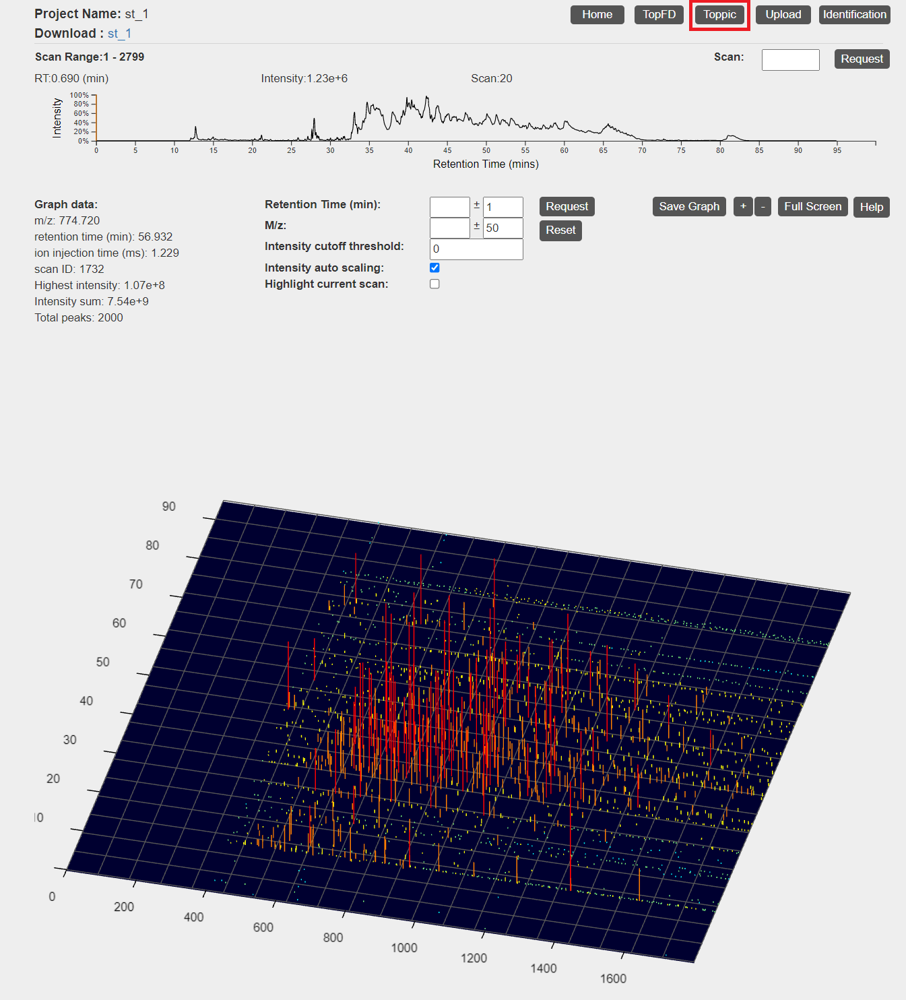

TopMSV
1 Installation Guide
- Go to the Home page of TopMSV webpage.
- Fill out the registration form, and click "I accept license agreement and download TopMSV" to download it.
- Create a new folder
topmsvinside/var/optin local drive. - Extract the downloaded zip file into
/var/opt/topmsv. - Inside
/var/opt/topmsv, run the commands below:# install compiling tools sudo apt-get install build-essential cmake # install other dependencies sudo apt-get install zlib1g-dev libboost-filesystem-dev \ libboost-program-options-dev \ libboost-system-dev \ libboost-thread-dev \ libboost-iostreams-dev \ libboost-chrono-dev \ libxalan-c-dev sudo apt-get install nodejs sudo apt-get install npm # install npm dependencies npm install
- Build mzMLReader program inside cpp folder:
# building cpp program and back to app root folder cd cpp/build cmake .. make -j$(nproc) cd ../..
- Build TopFD and TopPIC for spectral deconvolution and protein identification:
cd proteomics_cpp mkdir build cd build cmake .. make -j$(nproc) cd ../bin ln -s ../toppic_resources .
- Install dependencies for a subfolder:
# go to public/resources/topview and install dependencies for this folder cd ../../public/resources/topview npm install cd ../../..
- Install dependencies for mzid generator program
#only if Python is not installed already (python2 is compatible) sudo apt-get install python3.6 #install required packages for the program #use pip2 if using python2 pip3 install lxml pip3 install six pip3 install sqlalchemy pip3 install numpy pip3 install pyteomics - Create Google OAuth 2.0 credentials and enter the credentials in auth.js file.
#auth.js file ... passport.use(new GoogleStrategy({ clientID: "ENTER YOUR CREDENTIALS HERE", clientSecret: "ENTER YOUR CREDENTIALS HERE", callbackURL: 'http://localhost:8443/auth/google/callback' }, (token, refreshToken, profile, done) => { return done(null, { profile: profile, token: token }); })); - Start the server.
npm start
- Open Chrome browser and visit http://localhost:8443/ to start using TopMSV.
2 Tutorial
2.1 Top-down MS/MS Dataset
In the MS experiment, the protein extract of S. typhimurium was reduced with dithiothreitol and alkylated with iodoacetamide. The protein mixture was first separated by gas-phase fractionation, resulting in 7 fractions. Each fraction was separated by an HPLC system coupled to an LTQ-Orbitrap mass spectrometer (Thermo Fisher Scientific). MS and MS/MS spectra were collected at a resolution of 60,000 and 30,000, respectively. In this tutorial, we use only the data file of one fraction, which is converted to mzML file (st_1.mzML) using msconvert from ProteoWizard.
Click here
to download the dataset, save it in /var/opt/topmsv and unzip it.
2.2 Protein sequence database
A S. typhimurium proteome database of 1,799 proteins was downloaded from the UniProt database.
Click here
to download the protein database and save it in /var/opt/topmsv.
2.3 Upload Data
- Click "Sign in" in the top right corner.
- Sign in using one of the existing Google credentials.
- Click "Upload" from the navigation bar.
- Type "st_1" as project name and click "Select mzML file" to upload a mzML file from
/var/opt/topmsv. - Click "Submit."
- After processing is finished, you will receive an email notification.


2.4 View Visualization Results
- Click "My project" in the project in the table in the main page.
- Click "Link" in the project in the table in the main page.

Information on how to interact with each visualization can be found at manual page.
2.5 Upload Envelope data
Annotation on isotopic envelopes can be added to the spectra graphs by running TopFD or manually uploading msalign files from local drive.
2.5.1 Run TopFD
- Click "TopFD" in the top right corner of the visualization page.
- Make changes to the parameters if needed, and click "submit" button.


2.5.2 Manual upload
- Click "Upload" in the top right corner of the visualization page.
- Click "Choose file" to locate ms1 and ms2 msalign files generated by TopFD, and click "upload" button.
- After envelope data is processed, isotopic envelope annotations are added to the spectra graphs. A table containing the envelope data is also generated.


2.6 Upload feature data
- Click "Upload" in the top right corner of the visualization page.
- Click "Choose file" to locate a mzrt csv file generated by TopFD, and click "upload" button.
- After mzrt data is processed, annotations for each feature (dotted rectangles) are added to the 3d graph. When a mouse cursor hovers over a rectangle, a tooltip is displayed with the current feature information.


2.7 Upload PrSM identification data
PrSM identification data can be uploaded by running TopPIC or manually uploading identification file from local drive. When the identification data is added, it is possible to adjust input data such as peaks, ions, PTMs and redraw spectra graphs.
2.7.1 Run TopPIC
- Click "TopPIC" in the top right corner of the visualization page.
- Upload a protein database file from
/var/opt/topmsvby clicking "Choose file." - (Optional) When uploading a text file for fixed PTMs, follow the format in this sample file. When uploading a text file for PTM characterization, follow the format in this sample file.
- Make changes to the parameters if needed, and click "submit" button.


2.7.2 Manual upload
- Click "Upload" in the top right corner of the visualization page.
- Click "Choose file" to locate the protein identification file generated by TopPIC, and click "upload" button.

2.8 Inspect page
- After running TopPIC, click "Inspect" button from the envelope table.
- Input data are pre-filled using the data from PrSM identification file. Make any changes if necessary, then click "Submit" to display visualizations.
- A protein sequence with a MS/MS spectra graph, a mono mass graph, a mono mass table, and a theoretical fragment ion mass table appear.
Information on how to interact with each visualization can be found at manual page.